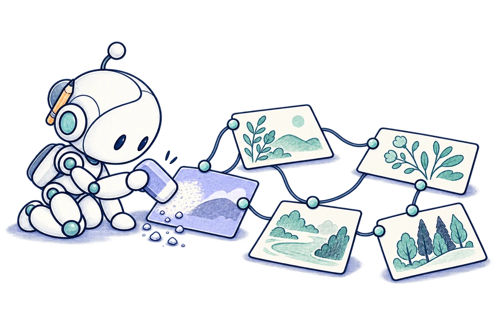
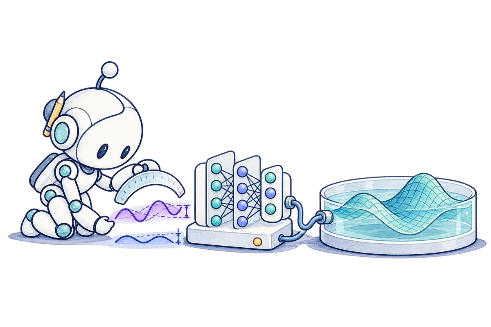
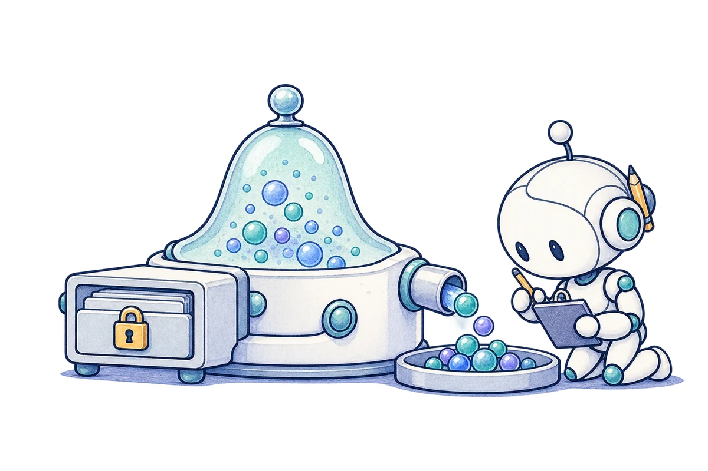
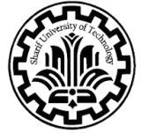

2026 / PREPRINT
Geometry-Adaptive Mechanisms for Private Synthetic Data
Generating private synthetic data with error guarantees that adapt to the data’s intrinsic geometry, using a sparse hierarchy to reduce computation.
Read moreMachine learning researcher
M.Sc. Computer Science Sharif University of Technology
Fundamental questions
in machine learning.
My background is in mathematics and computer science, which I studied at Amirkabir University of Technology. I’m now a master’s student at Sharif. I’m curious about fundamental problems in machine learning, from the guarantees we can prove to the behavior we see in experiments. I like following the connections between problems, and my interests often extend beyond the topics of my current papers.
Choose a topic to explore



I study what can be learned under differential privacy and how much data it takes. My work connects algorithms with lower bounds to understand the trade-off between privacy and accuracy.
01 / Selected work
2026 / PREPRINT
Generating private synthetic data with error guarantees that adapt to the data’s intrinsic geometry, using a sparse hierarchy to reduce computation.
Read more2026 / IEEE TPAMI
Inverse adversarial examples help a smaller student learn a teacher’s robustness.
Read more
2025 / CMAME
Penalizing residual curvature to improve how neural networks solve differential equations.
Read more
2026 / PREPRINT
How much data do we need to privately generate a batch of Gaussian samples?
Read more2026 / PREPRINT
Estimating covariance from private releases when different parties hold different features.
Read more2026 / UNDER REVIEW
Why small batches early in training can reduce reliance on spurious correlations.
Read more02 / Experience
Working at the intersection of graph neural networks and conventional numerical methods for fluid simulation. I am developing models that use the structure of numerical solvers to predict fluid evolution over larger time steps than those solvers can reliably take on their own. The aim is to maintain accurate long-term predictions while reducing the number of simulation steps and the overall computational cost.
With Prof. Olga Fink

Developed a geometry-adaptive algorithm for differentially private synthetic data. It uses the data’s intrinsic structure to improve accuracy and reduce computation, with stronger error guarantees than methods governed by the ambient dimension.
Geometry-Adaptive Mechanisms for Private Synthetic Data
With Dr. Amir Reza Asadi
Worked on robust knowledge distillation, superalignment, and task arithmetic, focusing on their connections to adversarial robustness. The robust knowledge distillation work was published in IEEE TPAMI.
Allies Teach Better Than Enemies: Inverse Adversaries for Robust Knowledge Distillation
With Prof. Yew-Soon Ong
Worked on two projects in adversarial robustness:
03 / Education

M.Sc. in Computer Science
2024 – present
Master’s thesisMinimax-Optimal Private Multi-Sampling from Gaussian Distributions
B.Sc. in Computer Science
2018 – 2023
Bachelor’s thesisA Survey on Differentially Private Algorithms
B.Sc. in Mathematics
2019 – 2023
04 / Teaching
05 / Coursework
All grades out of 20
Contact